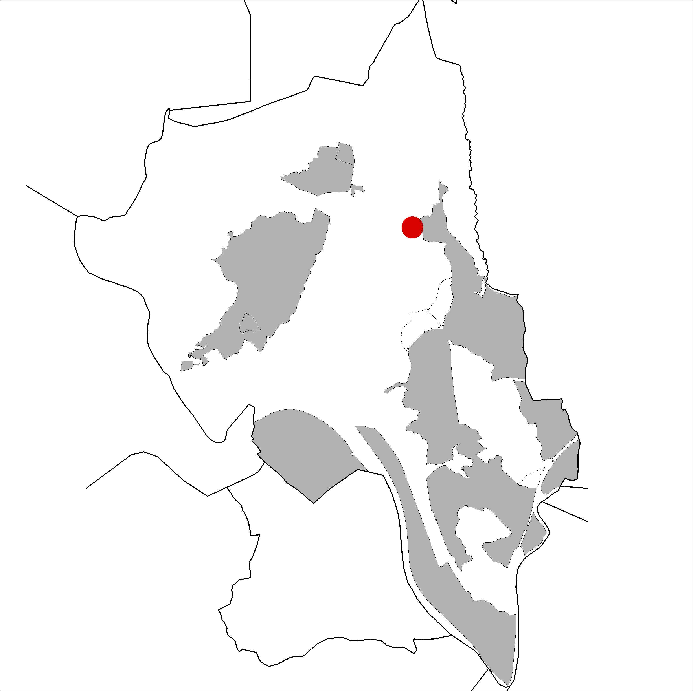

|  |
Nom de l’element: Salt de la Botzegada
Clau d’identificació: C.04
Nucli o indret: Torrent de Pegueres.
UTM: X=414.751, Y= 4.594.349
Règim del sòl: sòl no urbanitzable.
1.1 Característiques:
Salt d’aigua situat en un dels brancals del Torrent de Pegueres. Aquest acull aigua durant tot l’any i està format en un terreny de característiques argiloses, on l’aigua l’ha anat erosionant. El salt, de 3 o 4m d’alçada, cau en una bassa d’aigua permanent, on s’hi desenvolupa principalment una vegetació de canyes.
1.2. Estat de conservació:
Molt bo, tot i que pateix els efectes de la sequera prolongada.
1.3. Ús actual:
Ecològic, com a font d’aigua per a la fauna i per al desenvolupament de vegetació de ribera.
1.4 Serveis i accessibilitat de la finca:
Accés des de la pista forestal que surt de Can Costa i a l’alçada amb coordenades UTM: X= 414.629, Y= 4.593.808, cal agafar un petit sender a la banda dreta, el qual travessa 3 ponts de fusta malmesos.
Es tracta de l’únic salt d’aigua existent al terme municipal, el qual és permanent al llarg de l’any, garantint una qualitat ecològic de l’entorn on es troba.
3.1. Usos admesos:
Espais lliures
3.2. Condicions d’ordenació:
Segons Pla Especial a redactar.
3.3. Accés
Pista forestal que surt de Can Costa i a les coordenades UTM: X= 414.629, Y= 4.593.808, cal agafar un petit sender a la banda dreta, el qual travessa 3 ponts de fusta malmesos.
BPU (Bé Protegit Urbanísticament)